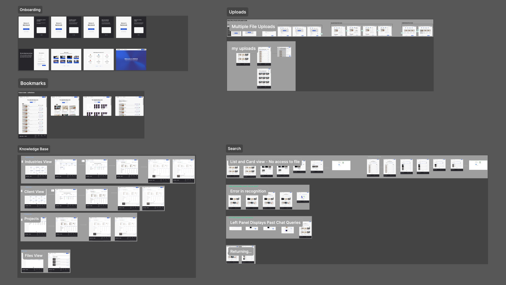
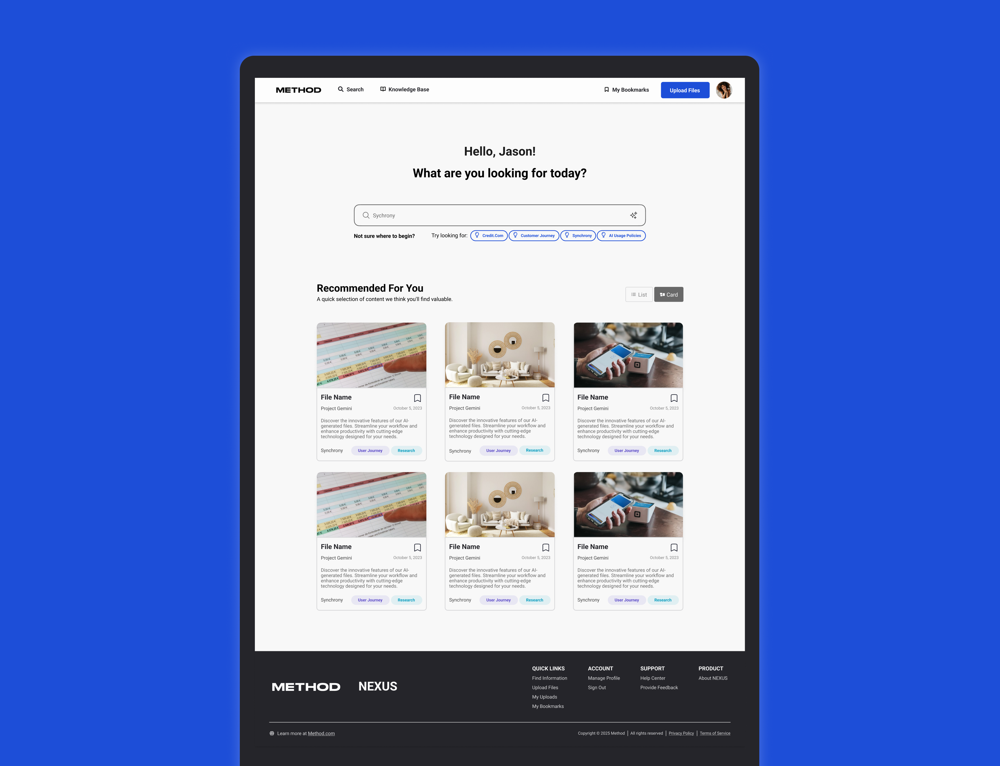

From tribal knowledge to institutional memory
Document discovery dropped from 5–6 hours to under 3 minutes. Shipped in 3 months with a C-suite-backed adoption strategy, and still in use at Method a year later.
The problem
Method is a design and innovation consultancy with over 300 people. Projects turn around fast and expertise sits in silos, so institutional knowledge lived in people rather than systems: Slack messages, protected Drive links in obscure folders, informal relationships with long-tenured employees. When people left, their expertise left with them.
Everyone agreed on the problem. What nobody had was a picture of how it actually played out across 300-plus people, what to build about it, or how to get stakeholders with competing priorities behind one direction. I was part of a 15-person team that took this from research to shipped product in 3 months. My piece was the stakeholder alignment work, which is what determined what got built.
What should we build to make institutional knowledge outlast the people who hold it? And how do we get a divided room of 20+ stakeholders to commit to it?
Constraints
| Timeline | 3 months from research to shipped. Every alignment failure would have cost build time directly. |
|---|---|
| Stakeholders | 20+ stakeholders including C-suite, each with competing priorities and different instincts about the solution. |
| Tech stack | Any solution had to integrate with Method’s existing Google Drive infrastructure. |
| Business need | Expertise was leaving with departing employees, and prior knowledge tools had seen their ROI collapse. |
Key decisions
In a room of twenty-plus stakeholders, the wrong process builds the wrong product. Five decisions determined what got built and what got cut.
The DVF workshop I designed and facilitated scored every concept on desirability, viability, and feasibility before open discussion was allowed. That way the loudest voice in the room, C-suite included, couldn't set the roadmap before the numbers had their say.
Instead of crowning a single winning concept, the workshop sorted ideas into a roadmap structure: what to build now and what to build later. That split held all the way to shipping.
The workshop revealed that Google Drive integration was the condition under which any AI layer would actually get adopted, not a nice-to-have. That reframing cut the solution space down to something buildable.
C-suite alignment created organizational commitment to a top-down adoption strategy with champions and company-wide initiatives. We treated it as a product requirement, and without that session this piece would have been cut.
Rather than validating once at the end, we ran user testing on mockups every week throughout development. Less rework, and engineering stayed aligned with what users actually needed.
How I measured success
We measured document discovery time. Knowledge living in people meant finding it was slow, and slow is what eventually made people stop looking. We captured a baseline through user research before anything was built (5 to 6 hours), then measured again after the platform shipped: under 3 minutes.
Measuring the baseline first, with the same research method, is what gives the before-and-after any meaning. The weekly mockup testing did a second job as measurement: by the time discovery time was measured at the end, it was confirming decisions already validated along the way.

The solution
The platform did two jobs. For retrieval, conversational and smart search return answers with cited sources, replacing the hunt through Slack threads and obscure Drive folders. For input, dropping in a document or link auto-completes its title, domain, topic, client, and deliverable type against a knowledge structure the team defined. The system stays organized without depending on anyone to tag things by hand.
It integrated with Method’s existing Google Drive infrastructure and shipped with a defined knowledge hierarchy, naming conventions, roles, and a C-suite-backed change management plan delivered alongside the tool rather than after it.

Outcomes
Ad-hoc knowledge sharing was replaced by a system the company committed to adopting from the top down.